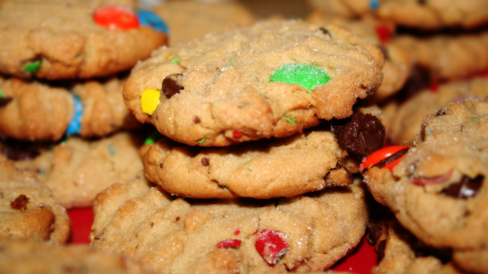

Peanut Butter M&M Cookies

These soft cookies are a year-round festive treat
Ingredients
- 1/2 cup (1 stick or 115g) salted butter
- 1/2 cup (100g) packed light brown sugar
- 1 large egg
- 3/4 cup (185g) creamy peanut butter
- 1 and 1/4 cups (156g) all-purpose flour
- 1 and 1/2 cups (300g) mini M&Ms
Steps
- In a large bowl, using a hand-held mixer or stand mixer with paddle attachment, cream the butter and sugars together on medium speed. Mix in the peanut butter, egg, and vanilla (in that order). Slowly mix in the baking soda and flour. Do not overmix. Fold in the M&Ms with a wooden spoon. Chill the dough for at least 1-2 hours and up to 3 days.
- Preheat oven to 350°F (177°C). Drop chilled dough by scant tablespoonfuls onto ungreased cookie sheet or silicone baking mat. I pressed a few M&Ms on top of the dough balls. Press the balls down (only slightly) since they won’t spread much while baking. Bake for 11-12 minutes. Cookies will be soft and may appear undone. They will firm up as they cool.
- Allow to cool completely on a wire rack. Enjoy!